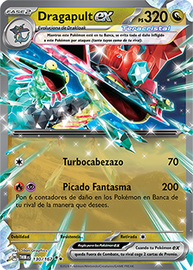
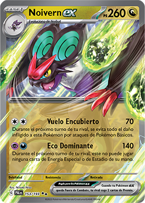
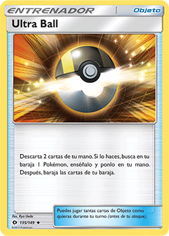
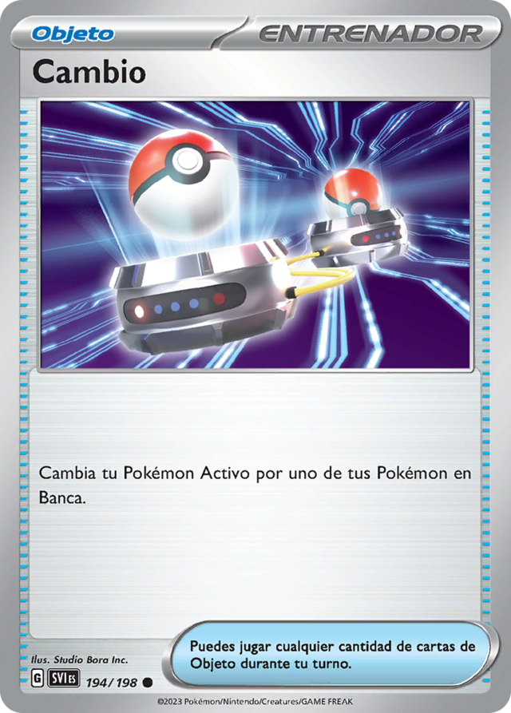
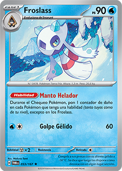
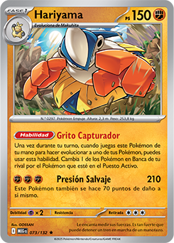

Pokémon with Rule Box
- M Pokémon EX
- Mega Pokémon EX
- Pokémon BREAK cards
- Pokémon EX
- Pokémon ex
- Pokémon V
- Pokémon V-UNION
- Pokémon VMAX
- Pokémon VSTAR
- Primal Pokémon EX
- Pokémon EX tera
- Pokémon GX
- Prism Star Pokémon
- Radiant Pokémon
- TAG TEAM Pokémon
1. Overview
This format adapts Pokémon TCG for multiplayer play (3–X players), keeping Prize Cards compatible. Matches use rotating objectives, negotiation, and thematic singleton decks centered on a Totem Pokémon.
2. Players
3–X players (recommended 3–6). All versus all format.
3. Setup
Game Preparation
- Deck: 100 cards, singleton rules.
- Each player places their Totem Pokémon in the top-right area, outside the deck.
- 6 Prize cards are placed face down.
- Players draw a standard Pokémon TCG opening hand (7 cards).
- Mulligans are free until a Basic Pokémon is in hand (reveal your hand when mulliganing).
- All players roll a die to determine who starts. The highest roll goes first.
Turn Structure
Turns follow the standard Pokémon TCG structure:
- Draw Phase: Draw 1 card.
- Action Phase:
- Play Pokémon
- Attach 1 Energy
- Use Abilities
- Play Trainers
- Retreat Pokémon
- Evolve Pokémon
- Attack Phase: You may declare an attack.
- Pokémon Checkup: Apply status effects and end-of-turn effects.
First Round Rule
- During the first round of the game, players cannot attack.
- All other actions are allowed as normal.
4. Totem Pokémon
Definition and Gameplay Rules
The Totem is a Pokémon with a rule box that starts outside the deck, in the top-right corner.
- It is not active at the beginning of the game.
- It cannot attack or use abilities until it enters play.
- During your turn, you can assign energy to the Totem instead of your Pokémon; this counts as your turn energy.
- The Totem cannot receive energies by card effects while it is outside the play area.
- When the Totem has enough energy and there is space on the field, it automatically enters play on the bench or active spot, replacing the current active Pokémon for free.
- If there are already 6 Pokémon in play, the Totem cannot enter until a space becomes available.
- Any energy card that provides more than 1 energy at once counts for its full amount.
Example:
Neo Upper Energygives 2 multicolor energy to any Stage 2 Pokémon → assigned to a Stage 2 Totem, it counts as 2 energies for the cost of 1.

Totem Defeat
- First defeat: invocation cost does not increase.
- Subsequent defeats: cost increases permanently by 1 and cannot be reduced by card effects.
Invocation Cost by Stage
- Basic: 2 energies
- Stage 1: 3 energies
- Stage 2: 4 energies
Example:
- Your Basic Totem enters play with 2 energies and is defeated → returns to Totem zone without increasing cost.
- The second defeat → invocation cost increases permanently to 3 energies.
5. Deck Construction and Type Identity
Decks are built around the Totem, respecting its allowed types and attacks.
Deck Rules
- Size: 100 cards (99 normal cards + 1 Totem).
- Duplicates: Not allowed, except Basic Energy, which can be included in any quantity.
- Repeated Pokémon: Allowed only if from different expansions and have different stats, attacks, or abilities.
- Forbidden: No cards with rule boxes (only the Totem can have one).
- Pokémon types: All Pokémon must belong to the Totem’s allowed types.
- Attacks: No attack may require Energy outside the Totem-defined types.
Deck Type Identity
- Totem’s base type is always allowed.
- Any Energy type required by the Totem’s attacks also counts as a base type, except Colorless.
- If the Totem has retreat cost > 0, Colorless Energy is allowed.
- If the Totem has retreat cost 0, Colorless Energy and Colorless Pokémon are not allowed.
- If a Totem attack requires Colorless but the Totem has retreat cost 0:
- Colorless does not count for deck construction.
- Colorless Pokémon and special Energy providing Colorless cannot be included.
- If the Totem’s retreat cost > 1, your deck identity can include additional types
equal to the retreat cost minus 1:
- One extra type is automatically assigned to Colorless.
- Each remaining extra type can be chosen by you, but only one type per additional retreat point.
- In the case of a Colorless Totem:
- You may freely choose additional types for your deck based on the retreat cost, without subtracting 1 for Colorless.
Practical Examples
- Totem type Dragon, attack requires Fire + Psychic + Colorless, retreat cost 1 → your deck can include Dragon, Fire, Psychic, and Colorless Pokémon. 
- Totem type Water, attack requires Water only, retreat cost 2 → your deck must include Water and Colorless; you may choose 1 additional type (e.g., Fire) as the second type.
- Colorless Totem, retreat cost 2 → Colorless counts as base; you may freely choose 2 additional types for the deck.
- Totem with retreat cost 0 → Colorless is not allowed, even if the attack requires it. 


6. Prize Cards
Each player starts with 6 Prize cards.
When a Pokémon is defeated, the controller takes:
- Normal Pokémon: 1 Prize
- Totem depends on rule box
7. Prize Interactions
In the Totem format, Prize cards act similarly to "lives" and affect certain attacks, abilities, or effects. To maintain consistency:
- Whenever an effect, attack, or ability refers to the player's own prizes or an opponent's prizes, swap the values of prizes between the active player and the targeted opponent for resolution purposes only.
- This means that any calculations or effects that depend on the number of prizes will temporarily consider the opponent’s prizes as the active player’s prizes and vice versa.
- The actual number of prize cards in hand or on the table does not change—only the value used to resolve the effect is swapped.
Example 1: Attack Reduction Based on Prizes
- If you (active player) have 1 Prize and your target opponent has 5 Prizes, for the purpose of resolving Ursaluna's ability, it is considered as if your opponent has 1 Prize and you have 5.
- Effectively, you can now attack because the ability resolves according to the swapped values.
Example 2: Iono
In Totem format:
- If you choose a rival and the effect depends on the number of Prize cards, the prizes are swapped for resolution purposes.
- For example, if you have 2 Prizes left and the opponent has 5, when resolving the draw effect of
Iono, it is as if you have 5 Prizes and the opponent has 2.
- Each player then draws cards according to these temporary values, following the normal instructions
of Iono.
8. Rounds & Free Interaction
Matches in the Totem format are divided into full rounds, where each active player takes one turn in order. Unlike traditional target-based systems, the Totem format allows free interaction between players, encouraging natural political decisions and dynamic gameplay.
General Rules
- During your turn, you may attack any opponent, provided you follow standard Pokémon TCG rules.
- There are no assigned targets or mandatory opponents.
- Players are free to negotiate, form temporary alliances, or shift aggression based on the current board state.
- Eliminated players are immediately removed from the game and are no longer considered for any effects.
Design Note
This free interaction model is designed to preserve player agency while allowing political pressure to emerge organically. Other rules within the Totem format prevent early focus and unfair eliminations.
9. Combat & Anti-Focus Protection
To prevent early player elimination and repeated focus on a single opponent, the Totem format uses a progressive protection system based on repeated attacks.
Repeated Attack Protection
- If you attack the same player in consecutive rounds, all damage dealt by your Pokémon to that player is reduced by 20 for each consecutive round.
- This reduction only applies between the same two players.
- The damage reduction resets immediately if you attack a different player.
- This effect only reduces damage and does not prevent other effects such as Special Conditions, discards, or Ability effects.
Example
- Round 1: Player A attacks Player B → No reduction.
- Round 2: Player A attacks Player B again → Damage −20.
- Round 3: Player A attacks Player B again → Damage −40.
- Round 4: Player A attacks Player C → Reduction resets.
Strategic Notes
- Players may still focus an opponent, but doing so becomes progressively inefficient.
- This system naturally encourages spreading damage and interacting with multiple players.
- Political agreements and threat assessment emerge without forced targeting.
10. Grace Totem Turn
To prevent unfair early eliminations, the Totem format includes a Grace Totem Turn rule.
Grace Totem Turn Rules
- If a player has no Pokémon in play at any point outside of their own turn, they are not immediately eliminated.
- That player gains a Grace Totem Turn and remains in the game until the end of their next turn.
- During their Grace Totem Turn, the player may:
- Play Pokémon normally.
- Use Trainer cards that search for Pokémon.
- Activate their Totem Pokémon if possible.
- If the player still has no Pokémon in play at the end of their Grace Totem Turn, they are eliminated.
Important Notes
- This rule does not prevent elimination due to running out of Prize Cards.
- The Grace Totem Turn only applies once per instance of having no Pokémon in play.
- This rule significantly reduces early focus and allows players a fair chance to recover.
10. Items
Items in the Totem format can be played outside of your turn, allowing players to strategically influence the game even when it is not their turn.
Rules
- Each player may play a maximum of 1 Item outside of their turn per round.
- Items can target your own Pokémon or an opponent’s Pokémon. When targeting an opponent, you pay all costs yourself.
- Item effects follow the standard Pokémon TCG rules unless otherwise specified by Totem format mechanics.
Examples
- Example 1: Player A uses a “Potion” on their own Pokémon during Player B’s turn. The Pokémon heals normally.

- Example 2: Player C uses an “Ultra Ball” to search for a Pokémon for Player D. Player C pays the cost (discard 2 cards) and Player D chooses which Pokémon is added to their hand.
- Example 3: Player E plays a “Switch” on an opponent’s Pokémon, moving it from Active to Bench. Player E pays any costs associated with the Item.
Strategic Notes
- This mechanic allows for political gameplay, enabling temporary alliances or interference with rival strategies.
- Careful timing of Item use can significantly influence the flow of the round.
- Since only one Item can be used per round outside your turn, planning is critical to maximize impact.
11. Stadiums
In the Totem format, Stadium cards function mostly like in standard Pokémon TCG, with a few clarifications for multiplayer play.
Rules
- Only one Stadium may be in play at any time.
- If a new Stadium is played, the existing Stadium is discarded (as per standard TCG rules).
- All other Stadium rules follow the standard Pokémon TCG format, including effects that impact all players.
- For Stadiums with directional effects (e.g.,
Parallel City), the player who plays the Stadium chooses the facing. The chosen effect applies to the player who played it, and the opposite effect applies to all other players.

- Effects that reference “your Stadium” or “opponent’s Stadium” in standard TCG apply to the controlling player and the targeted opponent respectively.
Examples
- Example 1: Player A plays
Parallel City. They choose the facing that reduces damage from Grass, Fire, and Water Pokémon by 20. All other players receive the effect that limits them to 3 Benched Pokémon.
- Example 2: Any Stadium that affects all Pokémon applies its effects to Totem Pokémon as well, provided it does not contradict Totem-specific rules (e.g., energy assignment restrictions).
Strategic Notes
- The facing mechanic allows the player who plays the Stadium to benefit themselves while imposing constraints on opponents.
- Timing and selection of the facing are critical in multiplayer matches, as it can shift alliances or influence which players are disadvantaged.
12. Global Effect Restrictions
To preserve balance and prevent excessive disruption in multiplayer games, the Totem Format restricts how effects that would normally impact multiple players or the entire board are resolved.
General Rule
- Supporter, Item, and Tool cards cannot affect all players at the same time.
- Any effect that would normally apply to “each player”, “all players”, or “both players” must instead be resolved by choosing a single opponent, unless the effect explicitly affects all Pokémon in play or the global game state.
Player-Targeted Effects
- Supporters and Items that affect a player directly (such as drawing cards, discarding cards, or shuffling hands) apply only to the player who played the card and one chosen opponent.
- The player who plays the card chooses the affected opponent and pays all costs.
- The effect is resolved only between those two players.
Pokémon-Targeted Effects
- Effects or Abilities that affect all Pokémon in play affect Pokémon belonging to all players.
-
Attacks that affect all Pokémon in play affect:
- All Pokémon of the targeted opponent.
- The attacking player’s Pokémon, if the attack text applies to them.
- No Pokémon belonging to other non-targeted players.
Exceptions
- Stadium cards are the only card type allowed to affect multiple players simultaneously.
- Cards that affect only the controller (for example, “draw cards” or “search your deck”) are not restricted by this rule.
Examples
- Example 1: A Supporter that says “Each player shuffles their hand into their deck and draws 4 cards.” → The active player chooses one opponent. Only those two players resolve the effect.
- Example 2: An Item that says “Discard all Tools attached to Pokémon in play.” → All Pokémon in play discard their Tools, regardless of controller.
- Example 3: A Tool that affects “both Active Pokémon.” → The effect applies only to the active player’s Active Pokémon and the chosen opponent’s Active Pokémon.
- Example 4: An attack that says “This attack does 20 damage to each Pokémon in play.” → Damage is applied to the targeted opponent’s Pokémon and to the attacker’s Pokémon if applicable, but not to other players.
- Example 5: Froslass has an Ability that says “During Pokémon Checkup, put 1 damage counter on each Pokémon that has an Ability (both yours and your opponent’s), except Froslass.” → This type of Ability affects all Pokémon with Abilities belonging to all opponents, as well as the controller’s Pokémon, following the card text. 
- Example 6: A Pokémon has an Ability that says: “Once during your turn, when you play this Pokémon from your hand to evolve one of your Pokémon, you may use this Ability. Switch 1 of your opponent’s Benched Pokémon with their Active Pokémon.” → This is a targeted effect that refers to “your opponent”, not to “all Pokémon in play”. The player using the Ability chooses one opponent, and only that opponent’s Active and Benched Pokémon are affected. Other players’ Pokémon are not affected because the Ability does not create a global game-state effect. 
Design Intent
These restrictions prevent a single card from disproportionately impacting multiple players at once, maintain strategic balance, and reinforce negotiation and political decision-making in multiplayer games.
13. Player Elimination
Players eliminated when out of Prize cards. Upon elimination, they are removed from objectives and all in-play cards are discarded. Discarded cards do not trigger "when discarded" effects.
14. Victory Condition
Last player standing wins.